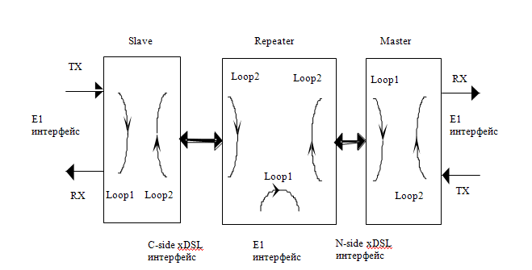
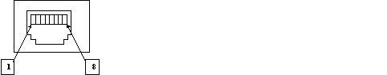
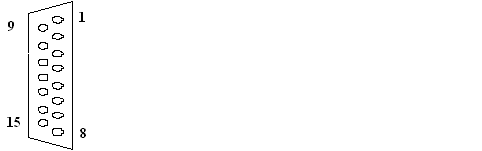
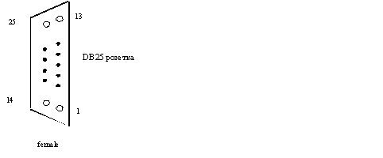
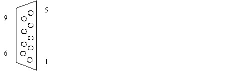
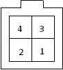
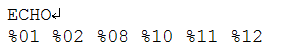

Тема №5. Устройство и эксплуатация цифровых систем телекоммуникаций
Занятие №6. Оборудование системы «Megatrans-3M(4М)
Учебные вопросы:
Литература:
- Многоканальные системы передачи (часть 2). Учебно-методическое пособие «Аппаратура МКСП с ЧРК». – Мн.: БГУИР, 2010.
- Учебно-наглядное пособие «Альбом схем аппаратуры МКСП». – Мн.: БГУИР, 2010.
- Касанин С.Н., Дюжов Г.Ю. Субботин С.Г. Методическое руководство «Цифровая система передачи MEGATRANS-3M». – Мн., БГУИР, 2010.
1. Назначение, состав и принцип работы модуля приемопередатчика.
Назначение
Модуль приемопередатчика предназначен для преобразования цифрового потока до 2304 кбит/с в линейный сигнал xDSL для последующей передачи по двухкабельной линии связи. Также, модуль приемопередатчика осуществляет дистанционное питание регенераторов.
Общие сведения о функционировании
Устройство состоит из следующих функциональных блоков:
микропроцессора с программным обеспечением (CPU, Flash);
интерфейса управления (RS232/TTL, RS485 – только для модулей SubRack);
вторичного источника электропитания (DC-DC);
первичного источника электропитания (AC-DC) (для модулей MiniRack);
источника дистанционного питания (для модулей LTU);
двух сетевых интерфейсов (Фреймер E1, Формирователь N?64/RS232, Блок Защиты);
кросс-коммутатора канальных интервалов 64 кбит/с;
процессора цифровой обработки сигнала (DSP);
линейного интерфейса.
Блок микропроцессора (CPU) осуществляет управление всеми функциональными блоками модуля в соответствии с программным обеспечением и установленными параметрами. Установка параметров работы, переключение режимов и контроль состояния системы возможны через интерфейс управления (RS232) с помощью терминала типа VT100. Через интерфейс управления также осуществляется загрузка программного обеспечения, в случае необходимости. Модули типа SubRack имеют второй интерфейс управления RS485. Этот интерфейс используется для обмена информацией между модулем FlexDSL и модулем FlexGain CMU при работе в составе сложных сетей под единой системой централизованного сетевого управления (SNMP). Питание модуля осуществляется от встроенного DC-DC конвертера напряжениями 2,5B, 3,3В и 5В. Диапазон входных напряжений вторичного источника электропитания ?38 … ?72 В.
Для организации дистанционного питания регенераторов в модуле предусмотрен блок источника ДП DC-DC2. В модулях в исполнении MiniRack имеется также блок AC-DC конвертера для преобразования напряжения сети 220 В переменного тока в постоянное напряжение – 48 В для питания DC-DC конвертера. Блок специализированного сигнального процессора (DSP) обеспечивает дуплексное преобразование данных, поступающих с сетевого интерфейса, в поток xDSL. При этом блок сигнального процессора обеспечивает:
генерацию структуры цикла xDSL (слов синхронизации, циклов CRC-6 и пр.) и заполнение ее данными сетевых интерфейсов;
выравнивание синхронизации между внутренней шиной данных устройства и передачей в линии (т.е. управление алгоритмом стаффинга);
выработку сигналов управления для блока линейного интерфейса.
Помимо вышеперечисленных функций, блок DSP осуществляет управление процессом установления связи в линии и цифровую обработку сигнала, поступающего из линии.
Блок линейного интерфейса производит цифро-аналоговое и аналого-цифровое преобразование данных, а также обеспечивают аналоговую фильтрацию и усиление сигналов. Блок линейного интерфейса содержит:
блоки АЦП и ЦАП;
выходной аналоговый фильтр/усилитель мощности линейного сигнала;
входной усилитель-фильтр/эхокомпенсатор;
цепи согласования импеданса и гальванической развязки с линией;
устройства подавления электромагнитных помех.
При необходимости в приёмный тракт блока линейного интерфейса включается блок АОКС, выполненный в виде отдельного модуля (MGS-3M-ASP). Сформированный в блоке линейного интерфейса аналоговый сигнал проходит через блок защиты и поступает на контакты xDSL-разъема. В блоке защиты предусмотрена возможность «добавления» к информационному сигналу дистанционного питания. Сетевой интерфейс соединён с сигнальным процессором через блок кросс-коммутатора.
Фреймер Е1 осуществляет:
преобразование цифрового потока данных от кросс-коммутатора в поток E1 с линейным кодом HDB3;
генерацию структуры цикла G.704 (слов синхронизации, циклов CRC-4 и пр.).
Формирователь N?64/RS232 осуществляет:
преобразование скорости потока данных, в зависимости от установленных скоростей передачи по сетевому и линейному стыку;
прием/генерацию сигналов линий управления N?64. Блок кросс-коммутации осуществляет отображение канальных интервалов 64 кбит/с от сетевого интерфейса на цифровой поток xDSL.
Режимы работы
Режим работы можно изменять с управляющего компьютера, подключенного к разъему управления модуля (для модулей в варианте исполнения MiniRack) или к модулю FG-ACU-SR или FG-TCU-SR, расположенных в той же модульной кассете (для модулей в варианте исполнения SubRack). Также, существует возможность изменять режим работы удалённого модуля, при условии наличия синхронизации в линии. Режимы ДП изменяются при помощи перемычек, расположенных на плате модуля приемопередатчика.
Линейный стык xDSL
Описанные ниже режимы относятся к линейной части устройства, состоящей из DSP и блока линейного интерфейса.
Режим Master/Slave (Ведущий/Ведомый)
Для установления связи между двумя модулями необходимо, чтобы модуль, расположенный на головном ОУП, работал в режиме Master, а модуль, расположенный на оконечном ОУП, работал в режиме Slave. При этом процедура установления связи контролируется модулем Master. Выбор режима работы Master/Slave производится командой MASTER ON/OFF.
Режим Аutorestart (Автоперезапуск)
Данная опция разрешает или блокирует автоматический перезапуск процедуры установления связи в линии согласно рекомендации ITU-T G.991.2, по которой автоматический перезапуск производится через 2 с после пропадания связи.
Включение/выключение режима Autorestart производится командой AUTORST ON/OFF. Рекомендуется всегда включать данный режим.
Режим ANNEX
Существует три режима работы (выбираются командой ANNEX):
1. ANNEX A – работа в соответствии с ITU-T G.992.1 ANNEX A,
2. ANNEX B – работа в соответствии с ITU-T G.992.1 ANNEX B,
3. ANNEX AB – режим автоматического выбора: режим определяется установкой ANNEX удаленного xDSL интерфейса. Если удалённый интерфейс также находится в автоматическом режиме, то связь будет установлена в соответствии с ITU-T G.992.1 ANNEX A.
Режим Rate Adaption (Автоматического подбора скорости)
При включении данного режима на модуле Master система автоматически выберет максимально возможную скорость работы на сегменте между модулем Master и первым регенератором, при котором соотношение сигнал-шум в линии будет больше 25 дБм. Включение/выключение режима Rate Adaptation производится командой ADAPT ON/OFF. Если режим Rate Adaptation выключен, система установит скорость в линии согласно установке BASERATE модуля Master.
Режим SCALE
В устройстве предусмотрена возможность программной регулировки выходного уровня передатчика командой SCALE в диапазоне от -16 до +2 дБ от номинального значения (+13,5 дБм для ANNEX A; +14,5 дБм для ANNEX B).
Сетевой стык E1 (2 Мбит/c G.703/G.704)
Описанные ниже режимы работы относятся к блоку сетевого интерфейса E1.
Режимы Transparent (прозрачный)/ ITU-T G.704 (кадрирование по MCЭ-T G.704)
В режиме Transparent (команда G704) поток Е1 передается без каких-либо изменений. Опция CRC4 недоступна. Прозрачный режим возможен только для скорости передачи в линии 2056 кбит/с или более (при установлении связи на скорости ниже, чем 2056 кбит/с выводится предупреждение в таблице конфигурации) и в случае отсутствия передачи данных через интерфейс Nx64/RS232. В режиме G.704 поток данных Е1 обрабатывается фрэймером потока Е1, расположенным в блоке сетевого интерфейса Е1. Выбор режимов Transparent/ITU-T G.704 производится командой G704 OFF/ON.
Режим CRC4 (контроль с использованием циклического избыточного кода), опция CRC4 (детектирование и генерация подсверхциклов CRC4)
Если данный режим активен (команда CRC4), фрэймер Е1 синхронизируется по CRC4-подсверхциклам и выдает информацию о CRC-ошибках, а также регенерирует КИ 0 в исходящем потоке (т.е. регенерирует CRC4-подсверхциклы и слова контрольных сумм в исходящем потоке Е1). Если режим выключен, фрэймер Е1 синхронизируется только по кадрам и не выдает информацию о CRC-ошибках. Если данный режим выключен, КИ 0 (в т.ч. интернациональные биты) передается прозрачно! В независимости от выбора режима CRC4 интернациональные (Sa) и А-биты передаются прозрачно.
Режим E-bit insertion (управление битами Е)
Если данная функция активна, то обнаруженные во входящем потоке Е1 ошибки CRC4 будут вызывать соответствующее изменение бита Е в исходящем потоке Е1. Если данная функция не активна, то биты Е устанавливаются в 1. Данный режим возможен только при включенном режиме CRC4. Включение/выключение режима E-bit insertion производится командой EBIT ON/OFF.
Режим AIS Generation (генерация сигнала AIS)
Если данный режим разрешен, сигналы AIS будут выдаваться в сторону Е1 при следующих условиях:
отсутствует линейный сигнал от удаленного модуля или потеряна кадровая синхронизация в линейной части;
удаленный модуль посылает сигнал AIS.
Включение/выключение режима AIS Generation производится командой AISGEN ON/OFF.
Режим AIS Detection (детектирование сигнала AIS)
Если данный режим включен, получение сигнала AIS на стыке Е1 вызовет следующие события:
появление сигнала несрочной аварии;
передача сигнала AIS на удаленный модуль.
Включение/выключение режима AIS Detection производится командой AISDET ON/OFF.
Сетевой стык N?64 (V.35/V.36/X.21/V.28/RS232)
Описанные ниже режимы работы относятся к блоку сетевого интерфейса N?64 (V.35/V.36/X.21/V.28/RS232).
Режим Interface Type (тип интерфейса)
Сетевой стык N?64 может функционировать в одном из следующих режимов (команда TYPE):
V.35, скорость 64-2304 кбит/с;
V.36/X.21 without termination (без нагрузочного сопротивления), скорость 64 … 2304 кбит/с;
V.36/X.21 with termination (с нагрузочным сопротивлением), скорость 64 … 2304 кбит/с;
V.28 (синхронный), скорость 64,128 и 192 кбит/с;
RS232 (асинхронный), скорость 110 … 115200 бит/с.
Модем с сетевым интерфейсом N?64 является устройством DCE. Оконечное оборудование может быть как DTE, так и DCE. Для подключения к оконечному оборудованию используется кабель соответствующего типа.
Режим Bitrate (скорость передачи данных по стыку N?64, кроме RS232)
Скорость передачи по порту N?64 (команда BITRATE) может быть выбрана из диапазона 64 … 2304 кбит/с с шагом 64 кбит/с (т.е. n=1…36). В режиме V.28 n=1, 2 или 3, т.е. скорость может составлять 64, 128 или 192 кбит/с.
Режимы Clockmode и Clockdir (режимы синхронизации, кроме RS232)
Режим синхронизации должен быть установлен в зависимости от индивидуальной конфигурации сети. Сеть должна иметь только один источник синхронизации. Возможна синхронизация от оконечного оборудования (External) или внутренняя (Internal) (команда CLOCKMODE). В режиме N?64 & fE1 синхронизация осуществляется от входящего потока Е1. Модуль Slave всегда находится в режиме синхронизации Remote (от удалённого модуля.
Тип стыка (сонаправленный – Codirectional или противонаправленный -Contradirectional) устанавливается программно (команда CLOCKDIR). Если модуль установлен в режим External или подключен к устройству DCE, то возможен только сонаправленный (Codirectional) режим работы. Устройство автоматически определяет полярности сигнала синхронизации передаваемых данных: Normal (стандартная, согласно ITU-T V.24)/Inverted (обратная стандартному).
Линии управления N?64
Линии управления V.35/V.36
Линия 107 модуля Master всегда находится в состоянии «ЗАМКНУТО». Линия 107 модуля Slave всегда находится в состоянии «ЗАМКНУТО», за исключением режима LOOP2. Линии 109 и 106 находятся в состоянии «РАЗОМКНУТО», если отсутствует связь в линии xDSL. Если связь присутствует, то линия 109 находится в состоянии «ЗАМКНУТО», а линия 106 имеет то же состояние, что и линия 105. Линия 142 находится в состоянии «ЗАМКНУТО», если установлен какой-либо из технологических шлейфов.
Линии управления X.21
Линия I находится в состоянии «РАЗОМКНУТО», если отсутствует связь в линии xDSL. Если связь присутствует, то линия I имеет то же состояние, что и линия C.
Линии управления V.28 и RS232
Состояние сигналов 105 и 108 не анализируется. Сигналы 109, 107 и 106 включены, если связь по DSL интерфейсу установлена. Иначе – выключены.
Шлейфы согласно V.54 (кроме V.28 и RS232)
Система поддерживает автоматическую установку диагностических шлейфов согласно ITU-T V.54. Данный режим может быть разрешён или запрещен командой AUTOLOOP ON/OFF.
Если режим автоматической установки включён, то переход линии 141 в состояние «ЗАМКНУТО» приводит к установке режима LOOP1, а переход линии 140 модуля Master в состояние «ЗАМКНУТО» приводит к установке режима LOOP2.
Режим Slotusage (использование КИ0 для передачи данных N?64)
В конфигурациях типа E1-N?64 КИ 0 xDSL используется для передачи КИ 0 потока Е1. В конфигурациях типа N?64-N?64 КИ 0 может использоваться для передачи данных N?64. Переключение между этими режимами осуществляется командой SLOTUSAGE OFF/ON, соответственно. При этом если КИ 0 не используется для передачи данных N?64, то скорость в линии должна быть, по крайней мере, на 64 кбит/с больше, чем по стыку N?64.
Сетевой стык RS232.
Описанные ниже режимы работы относятся к блоку сетевого интерфейса RS232.
Передача данных RS232
Скорость передачи через интерфейс RS232 может составлять 110, 150, 300, 600, 1200, 2400, 4800, 9600, 14400, 19200, 28800, 38400, 57600 и 115200 бит/с (выбирается командой RS232RATE [n], где N – скорость передачи данных в бит/с, а команда RS232ERATE [n] – задает превышение скорости передачи над скоростью приема, где N принимает следующие значения: 1 – 0%, 2 – 0,5%, 3 – 1%, 4 – 2%). Для корректной работы асинхронного последовательного интерфейса необходимо, чтобы скорость передачи данных из модема была не меньше скорости передачи данных их источником. Система также позволяет выбрать номер КИ для передачи данных RS232 командой RS232SLOT [n]. Если скорость на этом интерфейсе 57600 бит/с или менее, занимается один КИ. При скорости 115200 бит/с занимается два КИ: n и n+1. Количество бит данных в одном кадре (между стартовым и стоповым битами) на интерфейсе RS232, может составлять от 7 до 10 бит (команда RS232BITS [n]). Проверка на четность/нечетность не поддерживается, бит четности передается, как бит данных. Второй стоп-бит также передается, как бит данных.
Сетевой стык Ethernet
Сетевой стык Ethernet представляет из себя коммутатор, один вход которого соединен с линейным сетевым стыком, другой выведен на переднюю панель. Коммутатор работает по принципу «store-and-forward», обеспечивая таким образом согласование скоростей и фильтрацию поврежденных кадров. Модуль может автоматически выбирать режим работы сетевого стыка Ethernet. Согласно рекомендациям IEEE 802.3u модуль определяет скорость работы сети Ethernet (10/100 Мбит/c), а так же режим дуплекса (полный или полудуплекс). Имеется возможность ручной установки этих параметров (команда ETHSD). Также автоматически определяется тип используемого кабеля (параллельный или перекрестный). Информация из коммутатора Ethernet помещается в канальные интервалы кадра DSL согласно установленному порядку передачи данных и выбранному количеству занимаемых КИ для Ethernet (команда ETHPAYLOAD). Скорость передачи данных Ethernet через линейный сетевой стык может быть от 64 кбит/c до 2304 кбит/с, пропорционально количеству занимаемых КИ.
Режимы порядка передачи данных
Порядок расположения данных с различных интерфейсов в кадре DSL задается командой SERVICE.
Режим E1 only (передача только канальных интервалов потока E1 – базовый режим).
В данном режиме осуществляется передача только канальных интервалов потока E1. Включение данного режима осуществляется командой SERVICE E. Канальные интервалы потока Е1 предаются в xDSL-кадре согласно рекомендации ITU-T G.991.2. При этом в режиме PCM31 все КИ обрабатываются как КИ с данными.
Ниже представлена таблица соответствия скоростей передачи данных модема и передаваемых канальных интервалов потока E1 в режиме PCM31.
Таблица 1. Таблица отображения КИ потока E1 на поток xDSL в режиме PCM31
Число канальных интервалов потока E1 |
Скоростьпередачи в линии,кбит/с |
Передаваемые канальные интервалы потока E1 |
Передаваемые канальные интервалы xDSL |
|---|---|---|---|
3 |
200 |
0 1 2 |
0 1 2 |
0 1 2 3 |
264 |
0 1 2 3 |
0 1 2 3 |
••••• |
••••• |
••••• |
••••• |
••••• |
••••• |
••••• |
••••• |
31 |
1992 |
0 ... 30 |
0 ... 30 |
32 |
2056 |
0 ... 31 |
0 ... 31 |
В режиме PCM30 номер КИ, в котором будет передаваться сигнальная информация через линейный сетевой интерфейс (DSL) и через интерфейс E1, может задаваться (командой SIGSLOTS) как вручную, так и в автоматическом режиме. В последнем случае сигнальный КИ помещается в КИ16 DSL при скорости передачи в линии больше 1096 кбит/с и в последний доступный КИ DSL, при скорости передачи в линии меньше 1096 кбит/с.
Ниже представлена таблица соответствия скоростей передачи данных модема и передаваемых канальных интервалов потока Е1 для режима PCM 30 и автоматической расстановки сигнальных КИ.
Таблица 2. Отображение КИ потока E1 на поток xDSL в режиме PCM30
Число канальных интервалов потока Е1 |
Скорость передачи в линии, кбит/c |
Передаваемые канальные интервалы потока Е1 |
Передаваемые канальные интервалы xDSL |
|---|---|---|---|
3 |
200 |
0 1 16 |
0 1 2 |
4 |
264 |
0 1 2 16 |
0 1 2 3 |
••••• |
••••• |
••••• |
••••• |
••••• |
••••• |
••••• |
••••• |
16 |
1032 |
0 ... 14 16 |
0 ... 14 15 |
17 |
1096 |
0 ... 16 |
0 ... 16 |
••••• |
••••• |
••••• |
••••• |
••••• |
••••• |
••••• |
••••• |
31 |
1992 |
0 ... 30 |
0 ... 30 |
32 |
2056 |
0 ... 31 |
0 ... 31 |
Режим N?64 only (передача только синхронного потока данных)
В данном режиме осуществляется передача только синхронного потока данных, поступающего на сетевой стык N?64. Включение данного режима осуществляется командой SERVICE N. Данные с сетевого стыка N?64 отображаются на xDSL-кадр, начиная с КИ 0 (SLOTUSAGE ON) или с КИ1 (SLOTUSAGE OFF). В конфигурациях системы типа N?64-N?64 рекомендуется использовать режим SLOTUSAGE ON, а в конфигурациях типа E1-N?64 рекомендуется использовать режим SLOTUSAGE OFF. Ниже приведена таблица отображения данных N?64 на поток xDSL.
Таблица 3. Таблица отображения данных N?64 на поток xDSL
Скорость передачи по стыку V.35, кбит/с |
С использованием канального интервала 0 xDSL для передачи данных V.35 |
Без использования канального интервала 0 xDSL для передачи данных V.35 |
||
Скорость передачи влинии, кбит/c |
Передаваемые канальные интервалы xDSL |
Скорость передачи в линии, кбит/c |
Передаваемые канальные интервалы xDSL |
|
64 |
200 |
0 |
200 |
1 |
128 |
200 |
0 1 |
200 |
1 2 |
192 |
200 |
0 1 2 |
264 |
1 2 3 |
256 |
264 |
0 1 2 3 |
328 |
1 2 3 4 |
••••• |
••••• |
••••• |
••••• |
••••• |
1984 |
1992 |
0 ... 30 |
2056 |
1 ... 31 |
2048 |
2056 |
0 ... 31 |
2056 |
0 ... 31 |
Режим Ethernet only (передача только потока данных Ethernet)
В данном режиме передаются только данные, поступающие на сетевой стык Ethernet. Данные с сетевого стыка Ethernet отображаются на xDSL-кадр, начиная с КИ0 DSL (SLOTUSAGE ON) или с КИ1 DSL (SLOTUSAGE OFF). Данный режим выбирается командой SERVICE ETH.
Таблица 4. Таблица отображения данных Ethernet на поток xDSL
Скорость передачи по стыку V.35, кбит/с |
С использованием КИ 0 xDSL для передачи данных Ethernet |
Без использования КИ 0 xDSL для передачи данных Ethernet |
||
Скорость передачи в линии, кбит/c |
КИ xDSL, используемые для передачи данных Ethernet |
Скорость передачи в линии, кбит/c |
КИ xDSL, используемые для передачи данных Ethernet |
|
64 |
200 |
0 |
200 |
1 |
128 |
200 |
0 1 |
200 |
1 2 |
192 |
200 |
0 1 2 |
264 |
1 2 3 |
••••• |
••••• |
••••• |
••••• |
••••• |
2304 |
2312 |
0 ... 35 |
2312 |
1 ... 36 |
Режимы диагностики
Технологические шлейфы
Технологические шлейфы могут быть установлены как для модуля Master, модуля Slave, так и для регенератора. При этом для модуля Slave LOOP1 может устанавливаться локально, LOOP2 – локально или удаленно с модуля Master. Для регенератора LOOP1 и LOOP2 может устанавливаться как локально, так и удаленно с модуля Master, при этом светодиоды NE регенератора и FE («1») Master-модуля горят желтым светом. Технологические шлейфы LOOP1 и LOOP2 устанавливаются / снимаются командами LOOP1(2), соответственно.
Рис. 1. Технологические шлейфы
Analog Loopback (функция аналогового шлейфа)
Функция аналогового шлейфа используется для диагностического тестирования оборудования в режиме Master. Для проведения этого теста необходимо выключить ДП, отсоединить кабель подключения к линии, а в разъем xDSL вставить технологическую заглушку (объединить направления приема и передачи). Тестовая процедура должна быть запущена с помощью команды STARTAL. Во время аналоговой тестовой процедуры xDSL-приемник получает сигнал от своего собственного передатчика. Все данные, поступающие на сетевой интерфейс, должны возвращаться обратно согласно настройкам интерфейса. Данный режим вызывает сигнализацию о несрочной аварии.
Контроль ошибок и качества соединения
Передача в линии xDSL контролируется двумя различными способами. Контроль качества соединения необходим при инсталляции и в процессе эксплуатации, а контроль ошибок по ITU-T G.826 – для оценки работы линейного тракта в процессе эксплуатации и во время приемо-сдаточных испытаний. См. также описание команд управления SQ и G826.
Контроль качества соединения
Контроль качества соединения производится по параметру SNR (signal-to-noise ratio – соотношение сигнал шум), возвращаемому командой SQ. Данный параметр вычисляется согласно G.991.2 и является эффективным инструментом определения устойчивости xDSL-соединения. При пусконаладочных работах рекомендуется выбирать линейную скорость или подбирать кабельные пары (при жёстко заданной линейной скорости) таким образом, чтобы значение SNR было больше 25 дБм. Уровень SNR в 25 дБм при наличии гауссовского шума в линии соответствует вероятности битовых ошибок 10-7.
Описание светодиодов и аварийной сигнализации
Для контроля режима работы модуля и идентификации аварийных состояний используются два светодиода:
NE – светодиод индикации состояния локального модуля;
FE – светодиод индикации состояния удаленного модуля.
Каждый светодиод может светиться зеленым, оранжевым, красным светом или мигать в зависимости от состояния модуля. Ниже приведены таблицы возможных состояний светодиодов модуля для разных режимов работы:
Таблица 5. Расшифровка состояний светодиодов
Состояние модуля |
Состояние (режимы Normal и Dual Pair) |
|
NE |
FE |
|
Неисправен блок питании |
Выключен |
Выключен |
Сбой в аппаратном или программном обеспечении |
Мигает красным |
Выключен |
Нормальное функционирование |
Зеленый |
Зеленый (выкл. для Slave) |
Установление связи в xDSL-линии |
Мигает красный/желтый |
Любое (выкл. для Slave) |
Синхронизация |
Мигаетжелтым/зеленым |
Любое (выкл. для Slave) |
Несрочная авария (локал./удал.) |
Оранжевый |
Оранжевый (выкл. для Slave) |
Срочная авария (локал./удал.) |
Красный |
Красный (выкл. для Slave) |
Отсутствие ответа по каналу управления от удалённого модуля (только для Master) |
Зеленый |
Красный |
Описание разъемов
Разъем xDSL
Тип разъема – RJ-45, 8 контактов.
Рис. 2. Разъем xDSL
Таблица 6. Назначение контактов разъема xDSL
№ |
Сигнал |
Назначение |
1 |
NC |
Не используется |
2 |
NC |
Не используется |
3 |
TX.a |
Высокий уровень, провод а, (передача) |
4 |
RX.a |
Низкий уровень, провод а, (прием) |
5 |
RX.b |
Низкий уровень, провод б, (прием) |
6 |
TX.b |
Высокий уровень, провод б, (передача) |
7 |
NC |
Не используется |
8 |
NC |
Не используется |
Разъем E1
Тип: Sub-D15, вилка
Рис. 3. Разъем E1
Таблица 7. Назначение контактов разъема E1
№ |
Сигнал |
Назначение |
1 |
RX1a |
E1 интерфейс, выход 120 ?, провод A |
2 |
FPE |
Земля |
3 |
TX1a |
E1 интерфейс, вход 120 ?, провод A |
4 |
FPE |
Земля |
5 |
FPE |
Земля |
6 |
NC |
Не используется |
7 |
FPE |
Земля |
8 |
NC |
Не используется |
9 |
RX1b |
E1 интерфейс, выход 120 ?, провод Б |
10 |
NC |
Не используется |
11 |
TX1b |
E1 интерфейс, вход 120 ?, провод Б |
12 |
NC |
Не используется |
13 |
NC |
Не используется |
14 |
NC |
Не используется |
15 |
NC |
Не используется |
Разъем N64/RS232
Рис. 4. Разъем N64/RS232
Таблица 8. Назначение контактов разъема N64/RS232
Pin |
V.24 (V.28) synchronous |
RS232 Pin asynchronous |
Direction |
|||
ITU-T # |
Description |
Name |
Description |
Name |
||
1 |
- |
Shield |
||||
7 |
102 |
Signal Gnd |
SG |
Signal Gnd |
SGND |
|
21 |
103 |
Transmit Data |
TD |
Transmit Data |
TXD |
TO DCE |
5 |
104 |
Receive Data |
RD |
Clear To Send |
CTS |
TO DTE |
4 |
105 |
Request To Send |
RTS |
Request To Send |
RTS |
TO DCE |
6 |
107 |
Data Set Ready |
DSR |
Data Set Ready |
DSR |
TO DTE |
20 |
108 |
Data Terminal Ready |
DTR |
Data Terminal Ready |
DTR |
TO DCE |
18 |
113 |
Terminal Transmit Clock |
TTC |
TO DCE |
||
25 |
114 |
Transmit Clock |
TC |
Receive Data |
RXD |
TO DTE |
8 |
115 |
Receive Clock |
RC |
Data Carrier Detect |
DCD |
TO DTE |
Pin |
V.24 (V.35/V.36) |
X.21 |
Direction |
|||
ITU-T# |
Description |
Name |
Description |
Name |
||
1 |
- |
Shield |
- |
Shield |
- |
- |
7 |
102 |
Signal Gnd |
SG |
Signal Gnd |
G |
- |
2 |
103a |
Transmit Data (A) |
TD(A) |
Transmit Data (A) |
Ta |
TO DCE |
14 |
103b |
Transmit Data (B) |
TD(B) |
Transmit Data (B) |
Tb |
TO DCE |
3 |
104a |
Receive Data (A) |
RD(A) |
Receive (A) |
Ra |
TO DTE |
16 |
104b |
Receive Data (B) |
RD(B) |
Receive (B) |
Rb |
TO DTE |
4 |
105a |
Request To Send (A) |
RTS(A) |
Control (A) |
Ca |
TO DCE |
19 |
105b |
Request To Send (B) |
RTS(B) |
Control (B) |
Cb |
TO DCE |
5 |
106a |
Clear To Send (A) |
CTS(A) |
Indication (A) |
Ia |
TO DTE |
13 |
106b |
Clear To Send (B) |
CTS(B) |
Indication (B) |
Ib |
TO DTE |
6 |
107a |
Data Set Ready (A) |
DSR(A) |
TO DTE |
||
22 |
107b |
Data Set Ready (B) |
DSR(B) |
TO DTE |
||
20 |
108a |
Data Terminal Ready (A) |
DTR(A) |
TO DCE |
||
23 |
108b |
Data Terminal Ready (B) |
DTR(B) |
TO DCE |
||
8 |
109a |
Data Carrier Detect (A) |
DCD(A) |
TO DTE |
||
10 |
109b |
Data Carrier Detect (B) |
DCD(B) |
TO DTE |
||
24 |
113a |
Terminal Transmit Clock TTC(A) |
DTE Signal Element (A) |
Timing (A) |
Xa |
TO DCE |
11 |
113b |
Terminal Transmit Clock TTC(B) |
DTE Signal Element (B) |
Timing (B) |
Xb |
TO DCE |
15 |
114a |
Transmit Clock (A) |
TC(A) |
TO DTE |
||
12 |
114b |
Transmit Clock (B) |
TC(B) |
TO DTE |
||
17 |
115a |
Receive Clock (A) |
RC(A) |
Signal Element Timing (A) |
Sa |
TO DTE |
9 |
115b |
Receive Clock (B) |
RC(B) |
Signal Element Timing (B) |
Sb |
TO DTE |
21 |
140 |
Remote Loopback |
RLB |
TO DCE |
||
18 |
141 |
Local Loopback |
LLB |
TO DCE |
||
25 |
142 |
Test Mode |
TM |
TO DTE |
||
Разъем управления (Monitor)
Тип: Sub-D9, розетка
Рис. 5. Разъем MONITOR
Таблица 9. Назначение контактов разъема MONITOR
№ |
Сигнал |
Назначение (*- для модулей типа Stand Alone) |
1 |
DA_COM/FG* |
Общий контакт срочной аварии / защитная земля* |
2 |
TXD |
Передаваемые данные (к модему) |
3 |
RXD |
Принимаемые данные (от модема) |
4 |
ND_COM/COM* |
Общий контакт несрочной аварии / общий контакт* |
5 |
SGND |
Сигнальная земля |
6 |
DA_NC |
Нормально замкнутый контакт срочной аварии |
7 |
DA_NO |
Нормально разомкнутый контакт срочной аварии |
8 |
ND_NC |
Нормально замкнутый контакт несрочной аварии |
9 |
ND_NO |
Нормально разомкнутый контакт несрочной аварии |
Разъем питания модулей MGS-3M-MRL-E1B/Eth
Тип: MiniFit, 4 pin
Рис. 6. Разъем питания модулей MGS-3M-MRL-E1B/ETH
Таблица 10. Назначение контактов разъема питания модулей MGS-3M-MRL-E1B/ETH
№ |
Сигнал |
Назначение |
1 |
–PWR |
«–» источника питания |
2 |
NC |
- |
3 |
–BatPWR |
«–» резервной батареи |
4 |
+PWR |
«+» источника питания |
Управление и аварийная сигнализация
Оборудование имеет встроенные функции управления и диагностики. Модули оборудования могут быть подсоединены посредством интерфейса RS232 к терминалу или компьютеру с возможностью эмуляции терминала для контроля, конфигурирования и вывода дополнительной информации, такой как сигнал качества xDSL- линии или характеристики G.826.
Управление модулями MGS-3M-SRL-E1B/ETH
На задней панели модульной кассеты FG-R-PCM/W располагается шина управления TTL, организованная по схеме «point/multipoint». Преобразователь уровней TTL-RS232 находится в модуле FG-ACU-SR (FG-TCU-SR), в нем же располагается разъем для подключения терминала. Для подключения терминала необходимо использовать стандартный кабель RS232 (см. табл.1.17). При подключении кабеля к СОМ-порту компьютера необходимо убедиться, что данный порт не занят драйверами каких-либо других устройств (например, мыши).
Таблица 11. Кабель для подключения управляющего компьютера к модульной
DB9, вилка (сторона кассеты |
DB25, розетка (сторона компьютера) |
DB9, розетка (сторона компьютера) |
2 |
3 |
2 |
3 |
2 |
3 |
5 |
7 |
5 |
Терминальная оболочка должна быть сконфигурирована следующим образом:
скорость передачи: 9600 бит/с;
формат передачи : 8-N-1;
управление потоком : XON/XOFF;
тип терминала: VT100.
В отдельный момент времени только один модуль в кассете может быть логически подключен к управляющему стыку. Соответствующий модуль выбирается в соответствии с номером плато-места, в которое установлен модуль. Для выбора соответствующего модуля необходимо набрать командную строку <%SN?>, где SN – номер плато-места.
Пример: Для обращения к модулю, установленному в 3-м слоте, необходимо ввести: %03?.
Модули в кассете отвечает на команду «CHO»строкой %SN, где SN – номер плато-места.
Набрав команду «ECHO» оператор получит отклик от модулей LTU, как показано:
Управление модулями MGS-3M-MRL-E1B/ETH
Терминал управления подключается к разъему MONITOR (тип DB9) расположенному на передней панели модуля. Требования к настройке терминала аналогичны требованиям для управления модулями типа SubRack. После включения питания модуля на экране ПК главное меню управления модулем появляется после нажатия клавиши Enter.
Принудительная установка адреса
Для модулей в любом исполнении, возможно, принудительно задать адрес при помощи команды SETADDR. Ввод команды SETADDR nn принудительно устанавливает адрес модуля, после чего для входа в меню соответствующего модема необходимо набрать командную строку <%nn?>. Диапазон адресов от 00 до С7 (00-99;A0-A9;B0-B9;C0-C7). Команда SETADDR 00 устанавливает модем в режим автоматического определения адреса для модулей MGS-3M-SRL-E1B/ETH (см. раздел 1.8.1) или отменяет вход в терминал по команде %nn – для модулей MGS-3M-MRL-E1B/ETH. При принудительном задании адреса для модулей типа SubRack необходимо следить, чтобы в одной кассете не оказалось двух или нескольких модулей с одинаковыми адресами. В противном случае, возможен конфликт по управлению и, как следствие, потеря возможности управления.
2. Назначение, состав и принцип работы модуля аналоговой обработки и коррекции сигнала.
Модуль АОКС предназначен для аналоговой обработки и коррекции сигнала в приёмном тракте линейного интерфейса модуля приёмопередатчика MGS-3M-SRL-E1B (MGS-3M-MRL-E1B).
Схема АОКС двух каскадная. По умолчанию включены оба каскада. Пределы рабочего затухания в зависимости от количества включенных каскадов АОКС для скорости передачи в линии 2056 кбит/с приведены в таблице 11.
Таблица 12. «Типовые требования к кабельному участку в зависимости от используемых каскадов АОКС»
Параметр |
Значение |
|||
Переделы рабочего затухания (А раб.), дБ, на частоте |
150 кГц |
250 кГц |
400 кГц |
Число каскадов АОКС |
0..36 |
0..46 |
0..59 |
0 |
|
15..43 |
18..56 |
24..70 |
1 |
|
30..51 |
38..66 |
49..80 |
2 |
|
Для регенерационных участков небольшой протяжённости, в зависимости от затухания, один или оба каскада АОКС могут быть отключены. Отключение каскадов АОКС производится на этапе производства, исходя из параметров линии связи, предоставленных заказчиком на этапе размещения заказа.
Модуль АОКС MGS-3M-ASP представляет собой печатную плату, которая устанавливается на модуль приёмопередатчика MGS-3M-SRL-E1B (MGS-3M-MRL-E1B) на этапе производства оборудования.